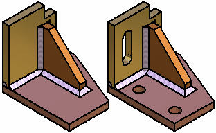

Creating drawings of weldment assemblies
You can create a drawing of a weldment assembly and its component parts in the Draft environment. The display of material removal features and material addition features added in the assembly can be controlled separately. For example, in one drawing view you can hide the material removal features, but display weld beads and protrusions. In another drawing view, you can display both types of features.

You can use the Drawing View Wizard to create assembly part views that show assembly features that are visible only within the context of the assembly.
For more information, see the help topic, Create assembly part views with the View Wizard.
Drawing view options for weldment assemblies
Some of the options that are available for adjusting the weldment assembly drawing view display are explained below.
-
Controlling material removal feature display
When placing a drawing view of a weldment assembly using the Drawing View Wizard, you can use the Show Assembly Features option to control the display of material removal features. When editing a drawing view, the Show Assembly Features option is on the Model Options tab on the Drawing View Properties dialog box.
-
Controlling weld bead display
When placing a drawing view of a weldment assembly, you can use display configurations to control the display of weld beads and material addition features in an assembly drawing view. For example, in the assembly document, you can hide the display of weld beads and material addition features, then save a display configuration. You can then use the display configuration to place a drawing view of the assembly with these features hidden.
If you have not defined a display configuration with weld bead features hidden, you can also control the display of weld bead features after you place the drawing view using the Display tab (Drawing View Properties dialog box. In the Parts List pane, select the weld bead features you want, then set or clear the Show option, to change the display.
-
Displaying cut weld bead faces in a section view
Independent hatch and fill display controls are available for cut weld bead faces in section drawing views. For example, you can hatch part faces that are cut, but not display hatching on the weld beads that are also cut.
Use the Edge Display tab (Solid Edge Options dialog box) to define surface preparation and post weld machining features.
-
Saving weldments as standalone parts
Saving a part with assembly feature modifications to a new document allows you to create a drawing for that part, prior to creating a weldment assembly drawing. You can also use the standalone document for manufacturing or analysis purposes.
The documents you create using the Save As→Save Selected Model command contain an associative part copy of the part in the assembly. Associative part copies do not contain a feature tree.
You can use the Save Selected Model dialog box to specify the new file type you want. You can save the component as a Solid Edge part document (.par) or sheet metal document (.psm).
You cannot create standalone documents of the weld bead features you create in a weldment assembly.
Assembly reports and parts lists
You can control whether a weldment assembly is treated as a single component or as a traditional assembly when creating assembly reports in the Assembly environment, and when creating parts lists on a drawing.
When you set the Expand weldment subassemblies option, the component parts in the assembly are included in the report or parts list. When you clear this option, the weldment assembly is treated as a single component, and the parts that make up the weldment assembly are excluded from the report or parts list.
This option is available in the Reports dialog box in the Assembly environment, and also in the Parts List Properties dialog box, on the List Control tab, in the Draft environment.
How do I
Construct a fillet weldConstruct a stitch weld
Construct a groove weld
Label a weld
Insert a weldment in an Assembly
Create a Weldment Assembly
Learn more
WeldmentsLook up more details
Fillet Weld commandFillet Weld command bar
Fillet Weld Options dialog box
Groove Weld command
Groove Weld command bar
Groove Weld Options dialog box
Label Weld command
Label Weld command bar
Label Weld Options dialog box
Stitch Weld command
Stitch Weld command bar
Stitch Weld Options Dialog Box
Insert Weldment command
Insert Weldment command bar
Weldment Parameters dialog box
Weldment Assembly command
Weldment Assembly Dialog Box
Weldment File Type dialog box